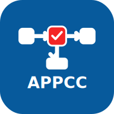

Envasadoras de água mineral natural e água natural · Rio de Janeiro
NC: PPR 1 · PPHO 2 · PC 3 · PPRO 4 · PCC 5. Índice: baixo ≥76%; médio >50% e <76%; alto ≤50%.
Controle de qualidade: 15 indicadores na página 12; frases completas no botão F. Novos requisitos: P=5 por critério adotado na revisão, sem atribuir frequência às 24 empresas. As probabilidades documentadas foram preservadas.
Responsáveis e manipuladores: 8 indicadores na página 13; frases completas e APPCC no botão F. Novos requisitos com P=5. Rotulagem concentrada no CQ15.
Captação: higienização interna reunida no indicador 4, com quatro frases. Complementos com P=5; textos da CP preservados. Campo de observações ampliado em pelo menos 50%.
Condução: indicador 11 complementado com execução, verificação e registros da liberação. Textos da CP preservados. Referências completas no botão F; observações ampliadas em pelo menos 50%.
Reservatórios: filtros e registros por tanque; execução e liberação da higienização; novo indicador 19 para PAE, fontes, manobras e ciclos. Quadro-resumo nas páginas 3–6, com textos integrais da CP e referências no F. Complementos com P=5; observações ampliadas em pelo menos 50%. A mesma classificação não autoriza, por si só, misturar fontes.
Captação: novo indicador 6 para identificação da fonte, classificação oficial, aproveitamento autorizado e documentos, com P=5. Classificações PC / PPRO / PC. Numeração atualizada: reservatórios 14–19; higienização 17; fluxo e manobras 19. Textos da CP e respostas anteriores preservados.